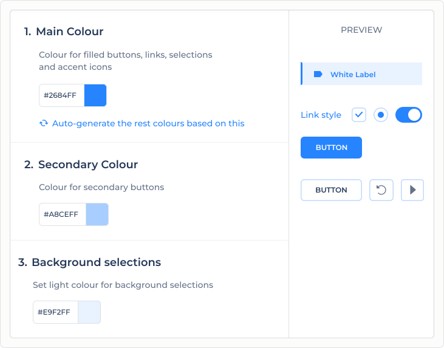
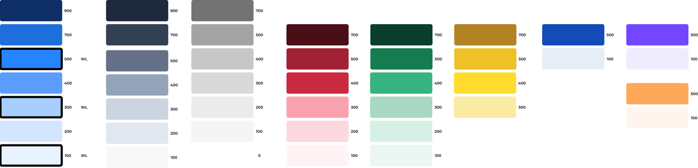
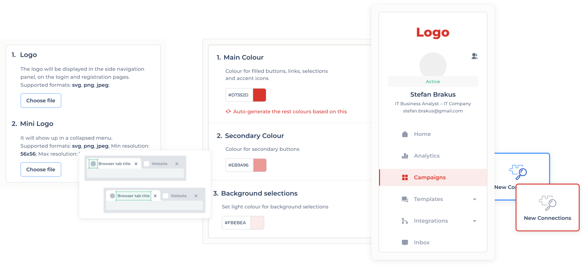

The product needed to be resold under partner brands — a requirement that landed after it had shipped, with limited resources and no theming infrastructure. The visible result is a logo, a name, and three colour controls any user can set themselves. The work was deciding what couldn't move.
The product was already in production when the business needed it resellable under partner brands — partly to take load off support, partly because self-serve branding was a gap sales couldn't fill. A revenue and positioning need, not a cosmetic one.
The obvious way to deliver it was a full theming layer: a large build, with a real risk that partners would produce broken-looking interfaces and contact support anyway. The expensive solution might not even fix the problem it was meant for.
Before designing anything, I talked to support: what do partners actually ask for? The answer reframed the scope. Users didn't want to theme a product — they wanted it to feel like theirs.
That feeling rested on very little: the logo, the name, the primary actions, a few accents. Everything else was structure they never noticed and never asked to change. The large, complex problem in the original brief was mostly imaginary.
I reviewed the whole system and redesigned the few elements that carry a partner's brand, so they could take any colour cleanly without affecting legibility or state. For partners without a designer, the system generates a coherent palette automatically.

The audit. Every colour in the product, sorted by one question: does it carry the brand, or do structural work? Only a handful carry brand. The rest — hierarchy, state, feedback — locks to a neutral scale that always stays legible, so a partner can't break the interface with a bad palette.

White-label went live as something sales could offer, at a fraction of the cost of a theming engine.
The questions the work was meant to absorb stopped. Partners can't misconfigure what was never left configurable.
The system is transparent and easy to maintain — it's held up for years without becoming a source of edge cases.
"Find out how little needs to change before building" became a default move on later system work.
The instinct under a constraint like this is to scope the proper solution and ask for time to build it. The more useful move was to check whether the proper solution was even needed — and the answer came from talking to support before opening the design tool.
It's one of the least visually loud things I've shipped, and one of the decisions I'd most want to be asked about, because the value is in how little ended up on the screen.